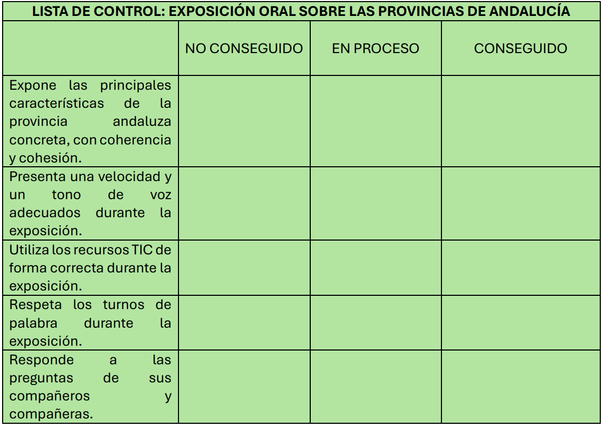

Reflexionemos sobre la evaluación del proyecto
La evaluación de nuestro proyecto es fundamental para analizar nuestro trabajo, aprender de nuestros errores y seguir progresando.
A continuación, podréis conocer qué herramientas vamos a utilizar para la evaluación de este proyecto, para analizar tanto el progreso como los resultados. Con estos instrumentos, no solo yo, como maestro, realizaré un análisis del trabajo, sino que también se incluye un instrumento de autoevaluación, para que vosotros y vosotras también reflexionéis acerca de vuestro propio aprendizaje.
a) REGISTRO ANECDÓTICO
Con el objetivo de analizar el trabajo y la actitud de cada alumno y alumna a lo largo de todo el proceso, utilizaremos un registro anecdótico. Este registro servirá al maestro para anotar información individual de cada alumno y alumna, para analizar aspectos importantes en momentos clave dentro del proceso de enseñanza y aprendizaje: cómo el alumnado se organiza ante el trabajo, cómo reacciona ante los problemas posibles que puedan surgir con las herramientas TIC, cómo se relaciona con los demás, etc. Así pues, este instrumento será esencial para realizar una evaluación continua y real, con numerosa información sobre el día a día en el aula.
b) LISTA DE CONTROL
Para el análisis y la evaluación de la exposición oral de cada niño y niña, utilizaremos una lista de control. En dicha lista, que expongo a continuación,
incluiremos varios ítems esenciales que deben ser tomados en cuenta para una correcta exposición oral.
El maestro completará un cuadrante para cada alumno y alumna. Así pues, cada niño y niña será informado sobre las anotaciones del maestro, de manera que sea una evaluación formativa y le ayude a continuar evolucionando favorablemente.

c) DIANA DE AUTOEVALUACIÓN
Este instrumento se utilizará como autoevaluación, es decir, para que el propio alumnado analice y reflexione acerca de su propio trabajo. Se utilizará al final del proyecto, es decir, tras la exposición oral. Se repartirá una diana de autoevaluación a cada niño y a cada niña, y se les pedirá que reflexionen acerca de cada ítem marcado, y que contesten con sinceridad y honestidad. Se les recordará que cada respuesta propia les sirve como herramienta para aprender de sus errores y para evolucionar en autonomía y en responsabilidad personal.